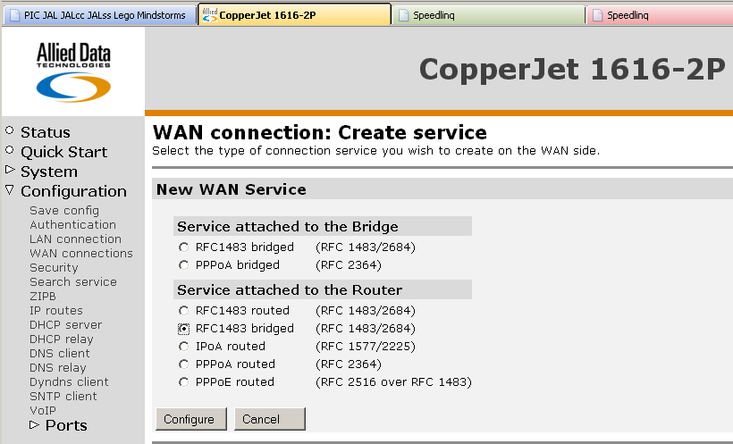

Onduidelijkheid over wie, wat, waar.
Wie is mijn "provider", waar moet ik zijn met storingen/klachten, aan welke verplichten hebben beide partijen zich te houden ?
Geheimzinnigheid over de
De kwaliteit van de ADSL verbinding.
Deze haalt bij lange na niet de beloofde 99%
De mogelijkheden om storingen te melden.
De afhandeling van klachten en storingen.
Het afschuiven op de KPN
Het niet bij de KPN bekend zijn